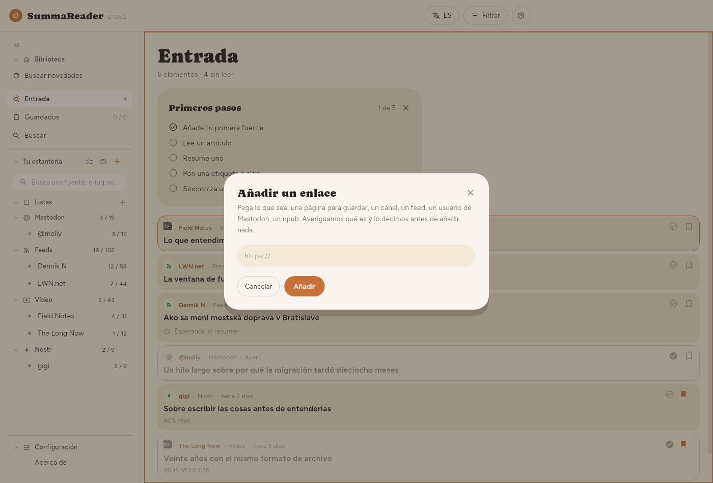

← Primeros pasos · Contenido · La ventana →
Cómo empezar
Añadir tu primera fuente
SummaReader está vacío hasta que le dices qué seguir. Pulsa + junto a Tu estantería y pega una dirección en Añadir un enlace.

Puedes pegar cualquiera de estas cosas y ocurre lo correcto:
| Pegas | Se convierte en |
|---|---|
La dirección de un feed (…/feed.xml, …/rss) | Un feed |
| La página principal de un sitio | Un feed, si la página anuncia uno |
| La dirección de un canal o un vídeo de YouTube | Ese canal |
Una cuenta de Mastodon (@nombre@servidor) | Las publicaciones de esa cuenta |
Un perfil de Nostr (npub1… o nprofile1…) | Las notas y los artículos de ese autor |
Un canal público de Telegram (t.me/nombre) | Las publicaciones de ese canal |
| Cualquier otra página | La propia página, guardada una vez |
Un autor de Nostr se lee de los relés en los que publica. Cada publicación se comprueba con la firma del autor. Un canal de Telegram tiene que ser público: la aplicación lee su página web en t.me/s/nombre. Un canal privado o un grupo se rechaza. Un @nombre solo es una cuenta de Mastodon, no un canal de Telegram.
Cuando una página también anuncia un feed, el cuadro ofrece las dos cosas: el feed sigue trayendo novedades; la propia página se guarda una vez y nada más.
Un feed de pódcast se sigue como cualquier otro feed. Cuando un episodio enlaza una transcripción, SummaReader lee y resume la transcripción en lugar de la página del episodio.
Importar lo que ya sigues
Si vienes de otro lector, Configuración › Avanzado › Tus datos › Importar › Importar desde un archivo acepta un archivo OPML. Todo lo que contiene llega como fuente.
Qué pasa en la primera comprobación
La primera consulta de un feed trae todo el archivo que anuncie en ese momento: quince vídeos, treinta artículos. Nada de eso es nuevo para ti, así que nada de eso se resume automáticamente. Solo se resume lo publicado después de suscribirte.
Lo más antiguo se puede resumir cuando quieras: ábrelo y pulsa Resumir, o usa el botón para muchos artículos descrito en Resúmenes.